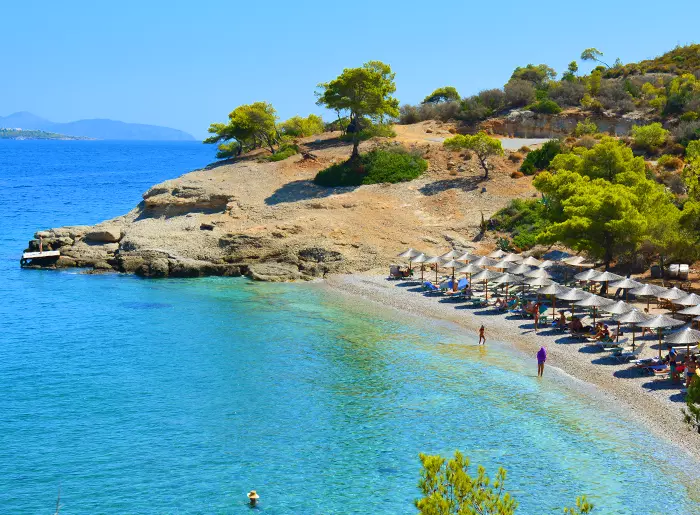
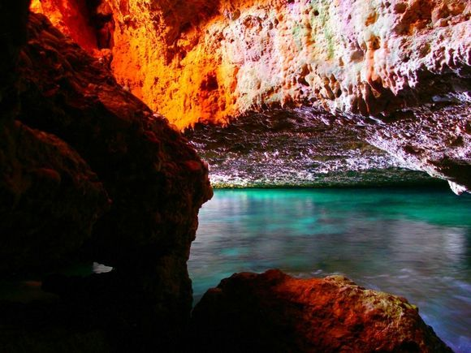
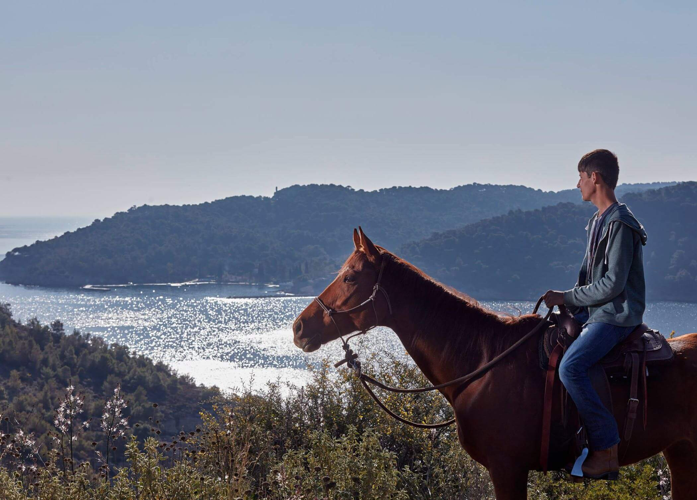

Σπέτσες
Οι Σπέτσες είναι ένα κοσμοπολίτικο νησί του Αργοσαρωνικού κοντά στην Αργολική χερσόνησο. Φημίζεται για την αριστοκρατική του ατμόσφαιρα, την πλούσια ιστορία του και τη νεοκλασική αρχιτεκτονική του. Οι επισκέπτες μπορούν να απολαύσουν ατέλειωτες βόλτες σε περιβάλλον χωρίς αυτοκίνητα που θα γεμίσουν μοναδικά το χρόνο των διακοπών τους.
Παραλίες

Άγιοι Ανάργυροι

Βρέλλος

Αγία Παρασκευή
Διαμονή
- Argonaftis Spetses
- Ethereal stay
- Klinis Hotel
Φαγητό
- Πάτραλης (θαλασσινά)
- Clock (Pizza, Pasta & Burgers)
- Cielo mar (All Day Restaurant-Bar)
Αξιοθέατα-Δραστηριότητες

Σπηλιά του Μπεκίρη

Μουσείο της Μπουμπουλίνας
